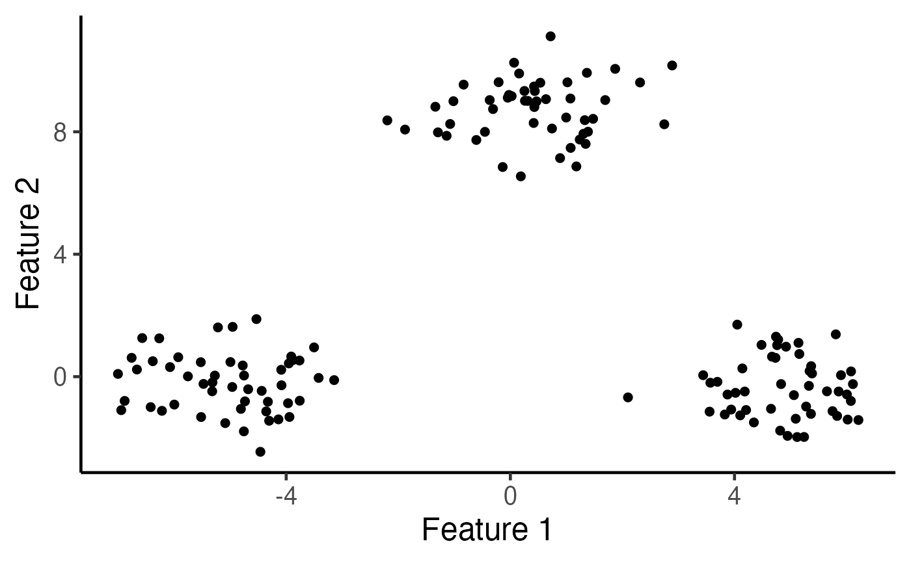

summary.kmeans_inference.RdSummarize the inferential result for k-means clustering
# S3 method for kmeans_inference summary(object, ...)
| object | output from running kmeans_inference |
|---|---|
| ... | to be passed to methods |
A data frame with summarized results
lev1 <- 0 # mean for group 1 lev2 <- 3 # mean (absolute value) for group 2/3 sigma <- 1 # level of noise nn <- 8 # grid size Dmat <- genlasso::getD2d(nn, nn) # generate D matrix for the 2D fused lasso ### Create the underlying signal A <- matrix(lev1, ncol=nn, nrow = nn) A[1:round(nn/3),1:round(nn/3)] <- 1*lev2 A[(nn-2):(nn),(nn-2):(nn)] <- -1*lev2 ### Visualize the underlying signal lattice::levelplot(A)  set.seed(2005) A.noisy <- A + rnorm(nn^2,mean=0,sd=sigma) y <- c(t(A.noisy)) ### Now use the fusedlasso function to obtain estimated connected components after K=13 ### steps of the dual path algorithm K = 13 complete_sol <- genlasso::fusedlasso(y=y,D=Dmat,maxsteps=K) beta_hat <- complete_sol$beta[,K] ### estimated connected components estimated_CC <- complete_sol$pathobjs$i estimated_CC #> [1] 2 2 2 3 3 3 3 3 2 2 2 3 3 3 3 3 2 2 2 3 3 3 3 3 3 3 3 3 3 3 3 3 3 3 3 3 3 3 #> [39] 3 3 3 3 3 3 3 1 1 1 3 3 3 3 3 1 1 1 3 3 3 3 3 1 1 1 ### Run a test for a difference in means between estimated connected components 1 and 2 result_demo <- fusedlasso_inf(y=y, D=Dmat, c1=1, c2=2, method="K", sigma=sigma, K=K, compute_ci=TRUE) #> Error in fusedlasso_inf(y = y, D = Dmat, c1 = 1, c2 = 2, method = "K", sigma = sigma, K = K, compute_ci = TRUE): could not find function "fusedlasso_inf" summary(result_demo) #> Error in summary(result_demo): object 'result_demo' not found